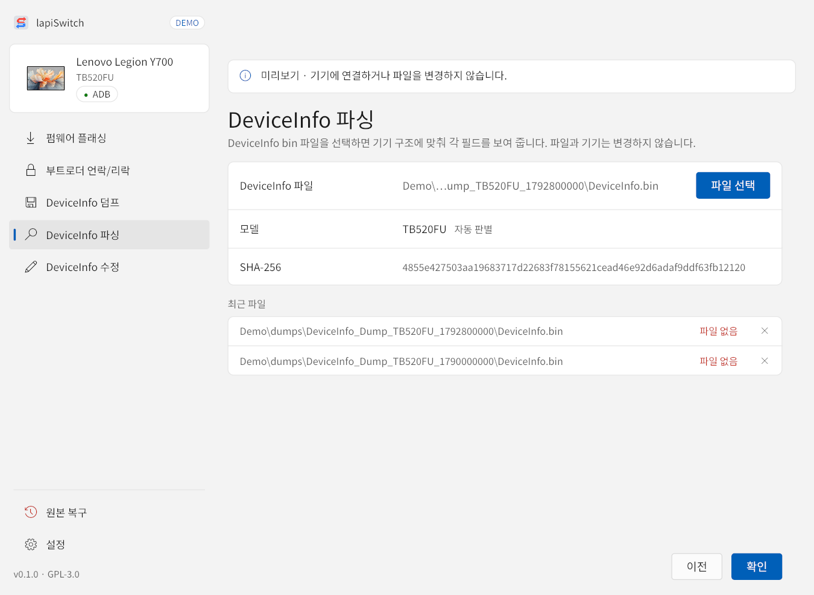
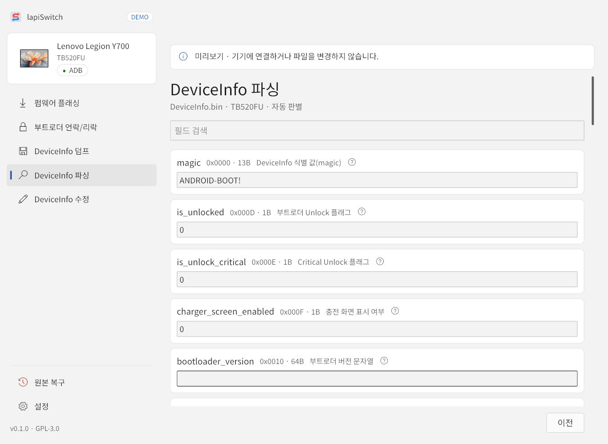

저장된 DeviceInfo 파일(.bin)을 기기 구조에 맞춰 필드별로 보여 줍니다. 파일과 기기는 바꾸지 않으며, 기기를 연결하지 않아도 됩니다.

- 파일 선택으로 DeviceInfo 파일을 고르거나, 최근 파일에서 고릅니다. 옮겨지거나 지워진 파일에는 “파일 없음”이 표시되며, ✕로 목록에서 지울 수 있습니다.
- 모델은 파일 내용으로 자동 판별합니다. 덤프 폴더의
info.json이 같은 파일을 가리키면 그 모델을 씁니다. - 확인을 누르면 필드 목록이 열립니다.

- 위쪽 필드 검색에 필드 키(예:
is_unlocked)나 필드 이름(예:부트로더)의 일부를 입력하면 해당 필드만 보입니다. 필드 설명은 검색하지 않습니다. - 필드 옆 ?를 누르면 그 필드가 하는 일에 대한 설명이 열립니다.